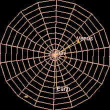
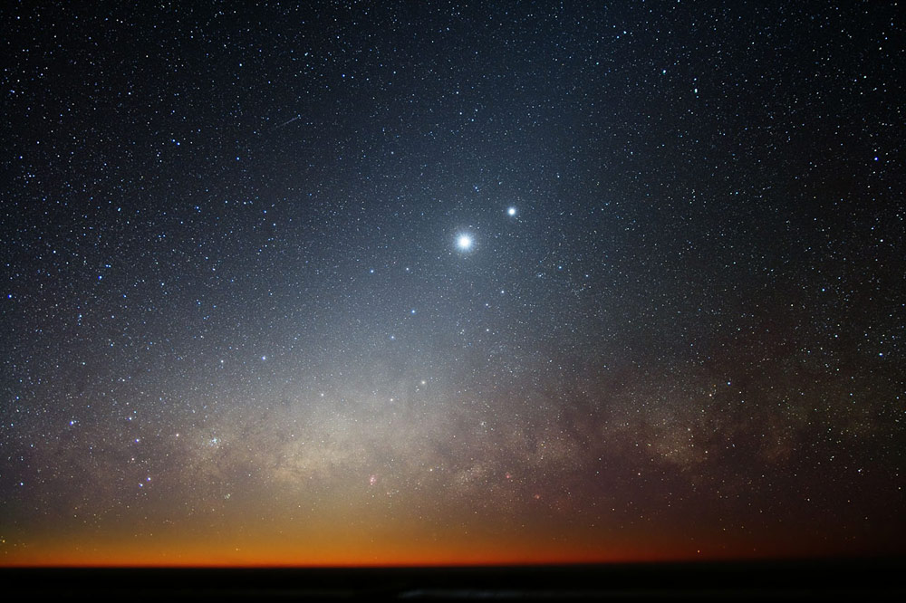
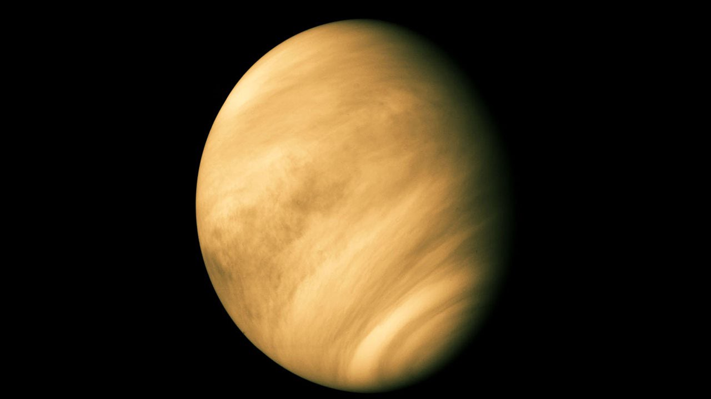
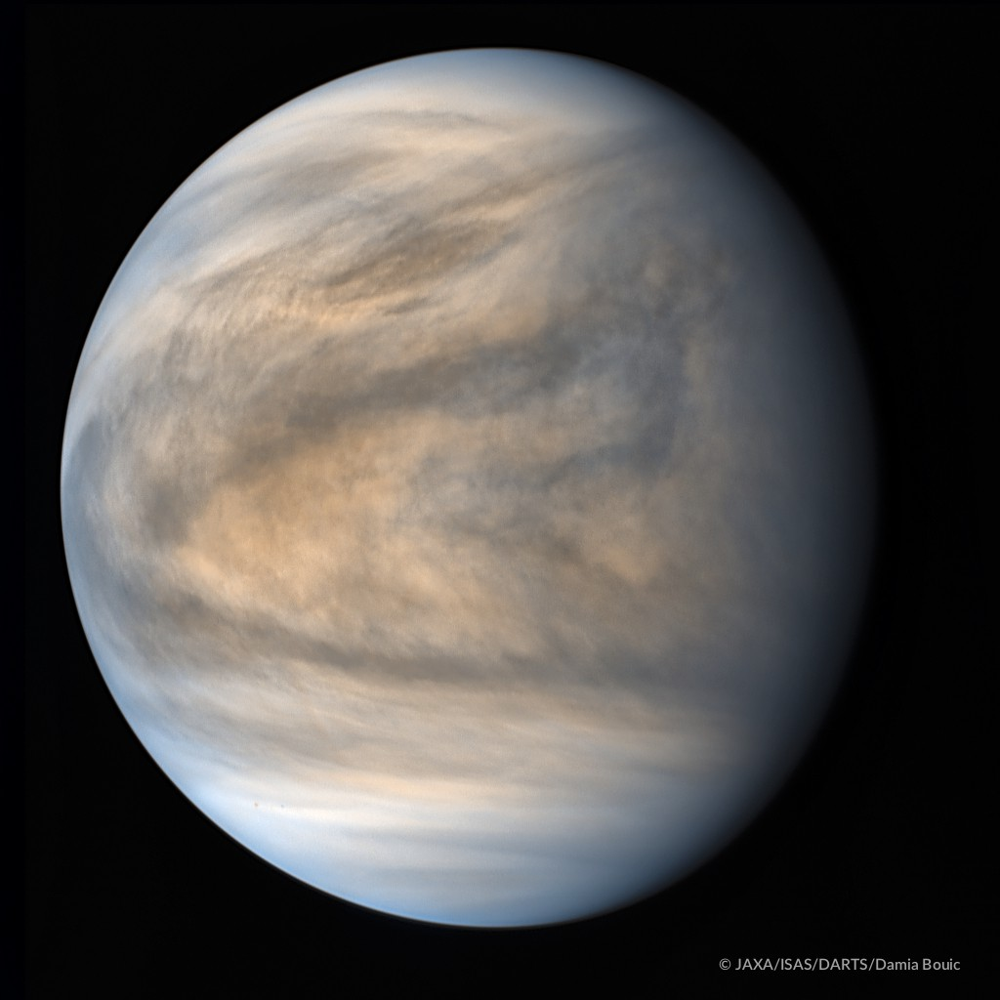

VENERE
Venere è il secondo pianeta del Sistema solare in ordine di distanza dal Sole con un'orbita quasi circolare che lo porta a compiere una rivoluzione in 224,7 giorni terrestri. La sua rotazione, rimasta ignota fino alla seconda metà del XX secolo, avviene secondo il moto retrogrado (in senso orario), cioè al contrario di come avviene per il Sole e per la maggior parte degli altri pianeti del Sistema solare.

Venere è l'oggetto naturale più luminoso nel cielo notturno dopo la Luna e per questo motivo è conosciuto fin dall'antichità. Esso è visibile soltanto poco dopo il tramonto e poco prima dell'alba.

Classificato come un pianeta terrestre, a volte è definito il "pianeta gemello" della Terra, cui è molto simile per dimensioni e massa. Tuttavia per altri aspetti è piuttosto differente dal nostro pianeta. Infatti l'atmosfera di Venere è costituita principalmente da anidride carbonica ed è molto più densa dell'atmosfera terrestre, con una pressione al livello del suolo pari a 92 atm. La densità e la composizione dell'atmosfera creano un impressionante effetto serra che rende Venere il pianeta più caldo del Sistema solare.

Venere è avvolto da uno spesso strato di nubi altamente riflettenti, composte principalmente di acido solforico, che impediscono la visione nello spettro visibile della superficie dallo spazio. Il pianeta non è dotato di satelliti o anelli e ha un campo magnetico più debole di quello terrestre.

Vista totale di Venere nell’ultravioletto, acquisita dallo strumento UVI il 17 maggio 2016. Le aree più scure indicano i luoghi dove sono presenti in maggiore concentrazione l’anidride solforosa e un’ignota sostanza assorbente.